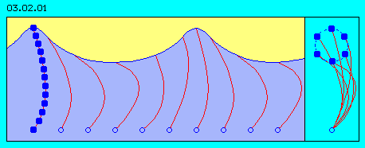
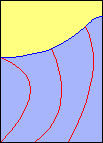
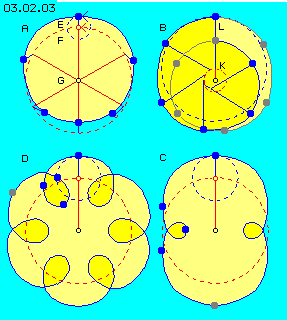

| Alfred Evert | 04.04.2003 |
03.02. Überlagerungen
Meereswellen
In Bild 03.02.01 ist schematisch ein Ausschnitt von ´Meer mit Wellen´ dargestellt. Der erste Eindruck ist vermutlich, dass dieser Wellenverlauf so nicht korrekt gezeichnet ist. Für unser Empfinden ist eine ´schöne´ Welle gleich Sinuswelle. Eine sinusförmige Welle wird z.B. durch einen ins Wasser geworfener Stein ausgelöst mit dem Anheben und Absinken in gleichförmiger Weise.
Die Wellen des Meeres werden aber durch Wind angetrieben (hier von rechts nach links), es liegen kreisende Bewegungen zugrunde. Tatsächlich sind die ´Täler´ dieser Wellen sehr viel länger als die ´Berge´, wie jeder Wassersportler weiß - und kurzwellige ´See´ fürchtet.

In diesem Bild links ist eine Kette von Wasserteilchen markiert, von diesem ruhenden Wasser unten bis hoch zu einem Wellenberg. Weiter rechts davon sind nur mehr die jeweiligen Verbindungslinien zwischen diesen Wasserteilchen eingezeichnet. Diese Linien (rot) könnten beispielweise durch hohen Seetang dargestellt werden.
Wenn anstelle des Wellenberges nun dort ein Wellental entsteht (bzw. wie weiter rechts eingezeichnet ist), dann muss die Wassermasse des Berges nach unten absinken, d.h. das dort bislang befindliche Wasser muss ausweichen. Diese Bewegung ist hier durch die diversen Verbindungslinien dargestellt, die alle gleich lang, jedoch mehr oder weniger nach rechts gebeugt sind. Das Wasser da unten ist also insgesamt in gleich starker Bewegung wie das an der Oberfläche.
Kreisbewegung 
Diese Animation zeigt einen nochmals kleinerer Ausschnitt und darin die von rechts nach links ´rollenden´ Wogen. Die jeweiligen Verbindungslinien zum ruhenden Wasser zeigen entsprechende Schwingungen.
Sehr tiefe Wirkung
Das ist in diesem Bild offensichtlich nicht der Fall. Also müssten die Punkte ´ruhigen´ Wassers sehr viel tiefer sein. Die oberflächliche Erscheinung der Welle wird damit praktisch nur mehr zum Symptom von sehr viel umfangreicheren Wasserbewegungen in tieferen Regionen.
Diese Erkenntnis ist wichtig für die Bewegung von Äther, denn dort können sich keine Teilchen gegenüber anderen verschieben entlang von Grenzflächen beispielsweise. Im Äther wird also jede großräumige Bewegung (analog zur Welle an der Wasseroberfläche) einen sehr großen Bereich ausgleichender Bewegungen erfordern (in fast ´astronomischem´ Ausmaß, beispielsweise millionenfach).
Unterschiedliche Geschwindigkeiten
Bei A sind mehrere Positionen eines Wasserteilchens während des Bewegungsablaufs dargestellt (blaue Punkte). Dieses Teil des Wassers befindet sich in einer Drehbewegung (E) mit relativ kleinem Radius. Der Drehpunkt (F) seinerseits befindet sich auf einer Kreisbahn auf größerem Radius um einen Drehpunkt (G).

Die Bewegung einer Meereswelle ist also nicht nur eine einfache Kreisbewegung, sondern kommt erst durch die Überlagerung von mindestens zwei Kreisbewegungen zustande. Dieses bei A dargestellt Bewegungssystem wird beidseits überlappend sein mit analogen Bewegungsmustern (also nicht nur seitlich davon, sondern überdeckend), wobei jede benachbarte Bewegung entsprechend phasenversetzt ist.
Jede einfache Meereswelle ist also schon ein System höchst komplex überlagerter Drehbewegungen. Indem im Wasser noch immer auch Verschiebungen von Wasserteilen relativ zueinander statt finden können, kann dieser Bewegungsablauf in nur zwei Dimensionen statt finden (so wie auf der Bildfläche).
Analog zu diesen Prozessen hier sind die Bewegungen im Äther beschaffen, nur dass dort keinerlei interne Verschiebungen statt finden können. Darum müssen alle Bewegungen im Äther immer zugleich in alle drei Dimensionen statt finden (wie im nächsten Kapitel dargestellt wird).
Unterschiedliche Bahnen
Bei B sind beispielsweise die Radien umgekehrt angelegt: mittig bei K eine Drehung des Drehpunktes an kleinem Radius, um die jeweilige Position dieses Drehpunkts eine Drehung an langem Radius L. Es resultiert daraus beispielsweise eine Bewegung des beobachten Punktes auf einer immer engeren Spirale einwärts (blaue Punkte) und anschließend umgekehrt wieder nach auswärts (graue Punkte).
Bei C dagegen ist eine Konstellation analog zu vorigem A gegeben, nur ist der Radius der äußeren Drehung größer und eine andere Relation der Drehgeschwindigkeiten gewählt. Anstelle einer ovalen Bahn ergeben sich nun zwei große und zwei kleine Schleifen, die jeweils mit höchst unterschiedlicher Geschwindigkeit durchlaufen werden.
Bei D ist eine nochmals größere Geschwindigkeit der äußeren Drehung gewählt, womit viele Schleifen entstehen, wobei die Bahnen zwischen äußeren und inneren Schleifen weniger Differenz hinsichtlich Länge bzw. Geschwindigkeit aufweisen.
Diese wenigen Darstellungen sollen aufzeigen, dass die Überlagerung von nur zwei kreisrunden Drehbewegungen jeweils konstanter Geschwindigkeit höchst unterschiedliche resultierende Bahnen mit sehr differenzierten Geschwindigkeiten ergeben können. Kreis plus Kreis ergibt keinesfalls wiederum eine Kreisbahn und die Geschwindigkeiten addieren und subtrahieren sich zu höchst unterschiedlichen Bewegungsmustern.
Die Betrachtungen zu den Meereswellen dürfen nicht eins-zu-eins auf Ätherbewegungen übertragen werden. Die hier aufgezeigten Möglichkeiten wie Probleme sind aber auch dort zu beachten. Allerdings finden im Äther alle Bewegungen immer zugleich in allen drei Dimensionen statt, wie die nachfolgende geometrische Darstellungen aufzeigen.
Es werden hier als Beispiel die Meereswellen betrachtet, also Erscheinungen der materiellen Welt. Wie oben ausgeführt, dürfen diese nicht direkt auf Bewegungsmöglichkeiten des Äthers übertragen werden (weil Äther keine Teilchen hat, im Gegensatz zum Wasser). Es können mit diesem Beispiel jedoch einige Elemente bzw. Probleme dieser Bewegungsform aufgezeigt werden.
Die Welle findet nicht nur an der Oberfläche statt, sondern reicht tief in das Wasser hinunter. Aber irgendwo unten bleibt das Wasser ruhig, hier markiert durch die Punkte am unteren Bildrand.
Wasserteilchen können sich gegeneinander verschieben. Dennoch müssten eigentlich die Wassermassen zwischen den Verbindungslinien konstant sein, d.h. gleich große Flächen bilden. Man kennt aus Unterwasser-Filmen dieses Bild von sanft schwingendem Tang und zwischen den einzelnen ´Bäumen´ müsste der Abstand insgesamt immer konstant sein.
Das Wasser an der Oberfläche ´stürmt´ zumindest mit dem Wellenberg relativ schnell vorwärts, während in der Tiefe das Wasser relativ langsam zurück schwingt. Mit einer Kreisbewegung (wie oben im Bild rechts) ist dieser Prozess nicht zu erreichen, weil diese Kreisbewegung an gleich großen Radien mit gleichförmiger Geschwindigkeit dreht. Unterschiedliche Geschwindigkeiten auf unterschiedlichen Radien erfordert Überlagerung von kreisenden Bewegungen. Einige Beispiele dazu sind in Bild 03.02.03 dargestellt.
In späteren Kapiteln spielen unterschiedliche Überlagerungen von Drehbewegungen ein große Rolle. Darum sind in diesem Bild 03.02.03 noch einige Varianten dargestellt.
03.03. Volumen und Formen
Äther-Physik und -Philosophie